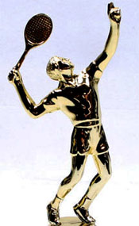

Previous: A New Teaching System - Doing Your Own Side by Side Analysis | 🏠 Teaching Systems Home | Next: One Hand Backhand Slice
Further thoughts
Comprehensive unified tennis knowledge base — Fundamentals, Stroke Analysis, Reference Library, and more
Further Thoughts:The Serve
John Yandell
I have continued to learn as we continue to film the most complex motions in sports.
After 20 years of studying high speed footage and working with the best coaches and teachers in tennis I am still learning. As Brian Gordon has said, the motions associated with the strokes in tennis are by far the most complex in any sport.
It's impossible to disagree with that. That of course applies to the serve, maybe especially.
We first filmed Pete Sampras in high speed video in 1997. Since then we've have filmed several dozen of the world's best servers -- Greg Rusedski, Andy Roddick, Roger Federer, John Isner, and many more. It's all there in the archives. (Click Here, for example, to see Nick Krygios's serve this month in the Interactive Forum.)
At each stage of this ongoing, evolving work I have continued to improve my understanding. I feel that my contributions on understanding the racket path (Click Here) the contact position (Click Here), as well as other technical factors, have advanced the understanding and teaching for a lot of players and coaches—for all the strokes.
But on the serve, there are so many variables. Stance, windup shape, the tilting of the shoulders, rotations of the body, rotations of the arm in the shoulder joint, the tossing motion, the contact point in three dimensions, the path of the racket upward and outward, the use of the front leg and of the back leg, the followthrough—and that's probably not all.
With each of those elements you can find elite servers with slightly or even wildly different variations and emphases. A legitimate question is whether a certain server is effective because of technique--or in spite of technique—and how much better could they be if they changed—or how much worse they could be if they changed.
What if we taught a Rafa clone the Federer serve?
No Cloning
Those questions can't be answered. There will always be coaches advocating different, even radically different ideas. We can't clone Rafa Nadal and teach him Federer's stance or windup and see if he'd gain 15 mph and 1000rpm—although in my opinion he could.
But in the past few months I have further clarified several complex, interrelated issues. These clarifications--or evolutions really--are based on talking in detail with Brian Gordon recently when I saw him in Florida during the Miami Open, and also talking with Dr. Ben Kilber when I saw him at the PTR convention in South Carolina. (Click Here for the first article in Ben's new series on the serve.)
After listening to and talking to those guys, I then went back to our incredible high speed footage to verify for myself what I thought I had learned. Interestingly some of that serendipitously dovetailed with John Craig's article this month on the Perfect Toss. (Click Here.)
To me this is exactly what Tennisplayer is about and always has been. Improving understanding through the flow, exchange, discussion, and synthesis of high level information from and among researchers, coaches and collaborators.
Three Things
So what am I actually talking about? Three things. First, the so called "shoulder over shoulder rotation" which is a major power source in the motion, how to create that, and how it's critically related to the role of the back foot. Second, how setting up shoulder over shoulder also relates to the tossing motion. And third, again interrelated, how the so-called "trophy position" and the start of the upward swing relate to the coiling and uncoiling of the legs.
The much discussed "shoulder over shoulder" rotation. Watch the relative height of the front and back shoulders reverse in a few fractions of a second.
Shoulder Over Shoulder
In one of the great, original Tennisplayer articles going back 12 years, Dr. Bruce Elliott makes this statement: "The key to one of the great, original Tennisplayer articles going back 12 years, Dr. Bruce Elliott makes this statement: "The key to a good service action is that you rotate shoulder over shoulder." (Click Here.)
So what is that precisely—shoulder over shoulder rotation? The simplest way to explain it is to look at, when the tossing arm reaches upward extension, the front shoulder is elevated above the back shoulder. At this point a line from the back shoulder to the front shoulder points upward at an angle of around 45 degrees to the court, or maybe a little more.
Then in a few fractions of a second this angle is reversed. As the racket moves through the trophy position to the racket drop, and then up to the contact, the front shoulder lowers and the back shoulder rises til the right shoulder is elevated above the left.
Now the line across the shoulders is pointing downward at the court, again at about 45 degrees or a little more. The reversal of the angle of this line is "shoulder over shoulder" rotation.
Note however that shoulder over shoulder rotation doesn't happen in isolation. Shoulder over shoulder rotation happens simultaneously with another torso rotation, and this makes it difficult to isolate.
At the same time the height of the shoulders is changing, the entire torso is also rotating counterclockwise around the axis of the spine. So as the shoulders rotate "over" each other, the shoulders are also both rotating "around."
This means shoulder over shoulder isn't simply directly forward up and over. Still there no doubt and there is a definite and significant reversal in the angle of the shoulder tilt and this is important to understand.
Should you manipulate the shoulder heights mechanically or is shoulder over shoulder a consequence?
But How?
So if Bruce is right (which I am sure he is), and this rotation critical to the motion then how do you make this happen? Or should you try?
Or does it happen automatically as a consequence of other factors instead? I say yes, it's a consequence. If the tossing motion and the loading of the back legs are correct, then the reversal in the angle of the back and front shoulder is inevitable in the upward swing.
It's not the intentional manipulation of the torso. In fact it's the opposite, an automatic passive consequence of other movements.
Interestingly at the time I was pondering this, I got an email from an old student who had been studying YouTube lessons on this exact topic. If you actually know anything about tennis, the terrible advice you see on YouTube will the lmake you question the validity of all advice on the internet on any topic. Could all those other experts be as stupid as the YouTube "experts" in tennis?
In any case, my former student was convinced he wasn't getting enough "shoulder over shoulder." It was driving him crazy trying to flip that back shoulder forward, yet his serve was coming apart.
So How Really?
So what's the actual way this happens in high level serving? Here is where my talk with Ben Kibler clarified the critical role of the back leg in all this. (Click Here.)
Gorgeous, equal distribution of the weight at the coiling of the knees
Lowering the hip while keeping the weight on the back leg, drops the back hip. This is turn drops the back shoulder.
As the motion starts and the arms drop the most efficient serves are virtually standing straight up and down with the weight equally on each foot. Critically the hips and shoulders are in align and basically straight up and down as well.
This equal distribution continues then until the extension of the tossing arm and the maximum coiling of the knees. Any backward torso lean comes from the bending of the knees and there is no additional arching, bending, or leaning
Is this like Roger Federer? Correct, just like Roger Federer.
This is one of the great points John Craig makes as it relates to the toss—keep the body quiet at the waist so the tossing motion can be slow, smooth and rhythmic and involve only the arm. (Again Click Here for his article.)
But why is this equal distribution so important? Because it maximizes the upward acceleration of the back hip. And according to the research, the speed of this acceleration is huge in generating racket speed.
This acceleration of the back hip then contributes to the natural, upward shoulder over shoulder rotation. But notice this is all a consequence.
The legs coil, the back shoulder drops. The tossing arm rises and the front shoulder goes up. Then boom. It all unleashes. The legs uncoil, the hip accelerates upward, the back shoulder rises, the tossing arm comes down, the front shoulder lowers. And you have an effortless high velocity serve.
Why Not Help?
But if shoulder over shoulder rotation is so great, why not enhance it? Why not really tilt those shoulders back at the waist, thrust that front hip out and get that front shoulder even higher and get that back shoulder even lower? Won't that make shoulder over shoulder even better?
Why not push shoulder tilt with artificial front hip lean?
Definitely, definitely no. Don't do it! I've written in the past about the Myth of the Archer's Bow. (Click here.) Despite the traction the idea has with some coaches—and yes you can find that on youTube—this is a terrible idea. You can clearly see the negative effects when players serve. Later contact. Less leg thrust. A lurching forward and over at the waist.
What I learned from Ben took this argument against the Archer's Bow to a new level of certainty. Ben Kibler calls it "front hip lean." The research shows this artificial tilt backward at the hips reduces the critical loading of the back leg.
Often this lean is paired with an extreme pinpoint or foot forward stance, in which the rear front moves forward and around the front foot into a position that drastically reduces its ability to drive upward off the court. This lack of back leg drive in turn reduces the critical upward acceleration of the back hip.
This results in what Ben calls the "pull" serve, in which the player uses his abdominals to pull the body back to upright and then through the motion. This contrasts with the "Push" serve in which the explosion of the back leg upward of the court creates the maximum contribution to energy in the bio mechanical chain. (Click Here.)

Is the trophy position real?
So there is a reason Roger's serve looks so effortless—virtually perfect use of the legs and the automatic, natural creation of shoulder over shoulder. I had always favored the simplicity of this model. But now I could point to a powerful supporting biomechanical argument.
The Trophy Position
Which brings us to the last evolution in my thinking regarding another widely discussed check point in the serve. The so-called Trophy Position. Should you strive to make this position happen? If so when?
Most people probably know that the trophy position is called the trophy position because it's the position of most tennis player figurines on top of tennis trophies. Usually, the racket arm is bent at a right angle at the elbow.
The racket itself is in line with the plane of the shoulders. The tossing arm is usually extended and the knees usually appear to be fully bent.
But how real is that? Again, talking to Brian Gordon clarified my perspective and gave me increased insight about what to look for in good serving and what to teach in terms of the position of the racket around the trophy position.
It turns out the key to understanding the trophy position is understanding how it relates to the leg drive. And this is stuff you may or may not have ever heard.
Look at the angle of the racket diagonally across the back just before Novak leaves the court.
As Brian and Bruce Elliot have shown, the leg drive is critical in maximizing the backward arm rotation from the shoulder. As the knees uncoil the upper arm rotation in the shoulder joint increases, and the racket is driven backward and down.
This backward rotation is what in turn maximizes the upward forward motion of the arm and racket to contact, another major contributor to racket speed. If you want more background on how these rotations work, Click Here.
But to maximize this effect from the time this leg drive begins, the racket needs to reach a specific place in the windup at a specific moment. This is the point at which the racket tip is at its lowest, that is, when the tip is the shortest distance from the court surface.
At this lowest point, the racket is falling diagonally across the player's back. This is just before it moves into alignment with the right side of the body to start up to the ball.
The player needs to reach this low point with the racket tip just before the front foot is leaving the court.
Reaching this point just before the player elevates completely off the court surface ensures that the force coming from the legs has maximized the backward external rotation of the arm, and this in turn will now be translated into the upward swing. So the leg drive in effect supercharges racket speed.
A Berdych ace. How bad can making the trophy position really be?
And the Connection?
So how does this relate to the so-called trophy position? Where the racket is when the leg drive starts effects whether the racket will make that key lowest point in the back swing.
If the racket gets to this point too early or too late, the effect of the leg drive is reduced. So you don't want the racket to have progressed too far or not far enough when the upward leg drive begins.
So is the classic trophy position the perfect place for the racket to be when the leg drive starts?
There are players at the highest level of tennis with great serves who appear to pass through the trophy position precisely at this moment.
Take Tomas Berdych, for example. His racket pretty much makes the trophy position dead on. At the deepest part of the knee bend his racket is in line behind the torso and there is 90 degree bend at the elbow.
Berdych has a world class top ten serve. So that's hard to criticize. None the less if you look at where he racket is when his front foot leaves the court, he is well past the lowest point in the swing. So maybe his serve could be even better than it is already.
Andy and John—not the classic trophy position for sure.
But the majority world class servers don't make the classic trophy position like Tomas. Typically they don't reach the classic trophy position at the times the legs are fully coiled.
And many players, never pass through the trophy position at all. Take Andy Roddick or John Isner.
In another groundbreaking article that goes back to the beginning of Tennisplayer, Rick Macci stated that Roddick was the fastest player in and out of the racket drop ever. (Click Here.) And in the current generation, Isner is probably right there with Andy.
At the moment when the racket is supposed to be in the traditional trophy position—tossing arm extended and knees coiled--both these players still have the arm and racket well to their right.
That means their rackets have to travel further in roughly the same interval to get to the racket drop compared traditional servers. And more distance traveled in the same time must mean more racket speed.
But the ability to do this is what makes players like Roddick and Isner mutants. They can have their rackets quite far to the right at the full knee bend, explode upward and drive the arm and racket backward and down at make the crucial meeting between the lowest racket tip point and the lift off from the court.
Isner: a compact outside backswing but perfect intersection of racket position and leg drive.
With a super flexible, super strong shoulder that outside position probably increases the amount of backward rotation and therefore racket speed coming upward and forward to the ball.
But copying this kind of mutant extreme is a disaster for the average player. It tends to reduce the depth of the racket drop and minimize the effect of the leg drive. And I have seen that damage done even for world class players. (Click Here.)
But what about a less extreme alternative? Say like Roger Federer? I've always noted that Federer's racket wasn't exactly in the trophy position at maximum coiling, ie at full knee bend, tossing extension, and yes, maximum shoulder tilt. It was a bit to his right
Now I understand why. Brian Gordon explained to me that he likes the racket 20 degrees or so from the classic position at this point in the swing. He thinks that when the uncoiling begins, this maximizes the backward arm rotation in reaching the racket low point.
And guess what? Another player with the same timing? Pete Sampras. Being a little shy of the trophy position gives more racket speed—if and this is an important if, you can still make that low point.
The classic trophy position is definitely ok. But there is a reason elite servers don't quite get there. And that's great to understand. If gives a new checkpoint to look at in evaluating players, particularly high level players.
How is the timing between Roger's coiling and Roger's racket?
It would be a mistake to say to someon "Hey the legs and the tossing arm look good but your racket is a little behind the trophy position," when actually your racket was in a preferred position. What you want to do first is look at the intersection between the low point with the racket and the push off the court.
Now you are in a position to evaluate the relationship of the motion to the trophy position . You want to make sure the racket is around that lowest point at the right time, and that you aren't losing energy from the legs in the motion.
For some players that might just before the classic trophy position, or dead on the trophy position or even slightly after. It's just great to understand the relationship. One more connection that deepens the overall understanding.
So yeah there is always something more to learn—even about a motion like the serve that I have been studying closely for a couple of decades. And I may have gotten some of this new information wrong or somewhat wrong and if so I hope to learn from that as well.
For now I am sticking to my statement in my teaching series on the serve, that the motion of Roger Federer, within a range of reasonable possible modifications, is still the best model. (Click Here.) But I plan to keep further thoughts coming as long as I continue to study this amazing game. And keep writing about them here.

John Yandell is widely acknowledged as one of the leading videographers and students of the modern game of professional tennis. His high speed filming for Advanced Tennis and Tennisplayer have provided new visual resources that have changed the way the game is studied and understood by both players and coaches. He has done personal video analysis for hundreds of high level competitive players, including Justine Henin-Hardenne, Taylor Dent and John McEnroe, among others.
In addition to his role as Editor of Tennisplayer he is the author of the critically acclaimed book Visual Tennis. The John Yandell Tennis School is located in San Francisco, California.
Source: tennisplayer.net archive — Further Thoughts.docx (John Yandell teaching library, 2002-2022). Extracted and rendered as HTML for Tennis Future Lab.